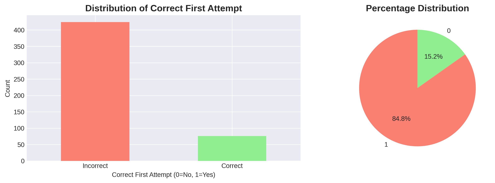
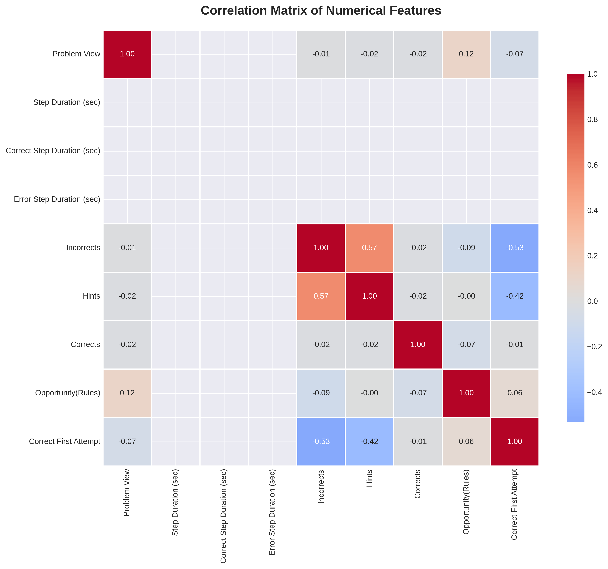
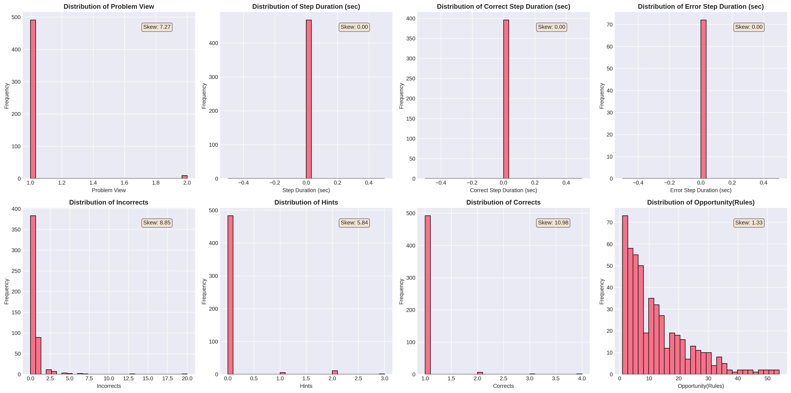
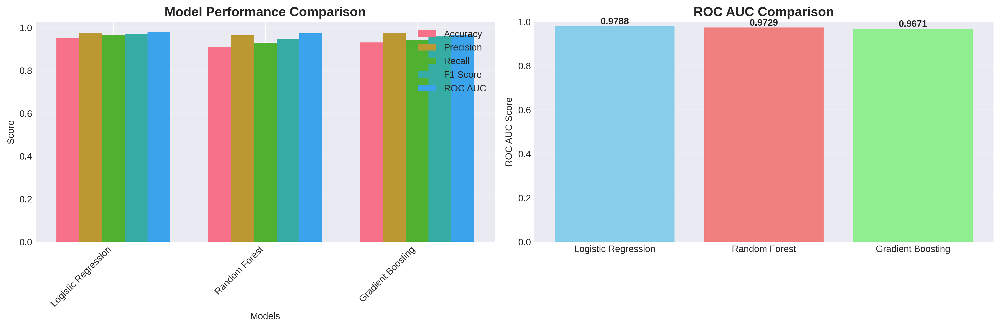
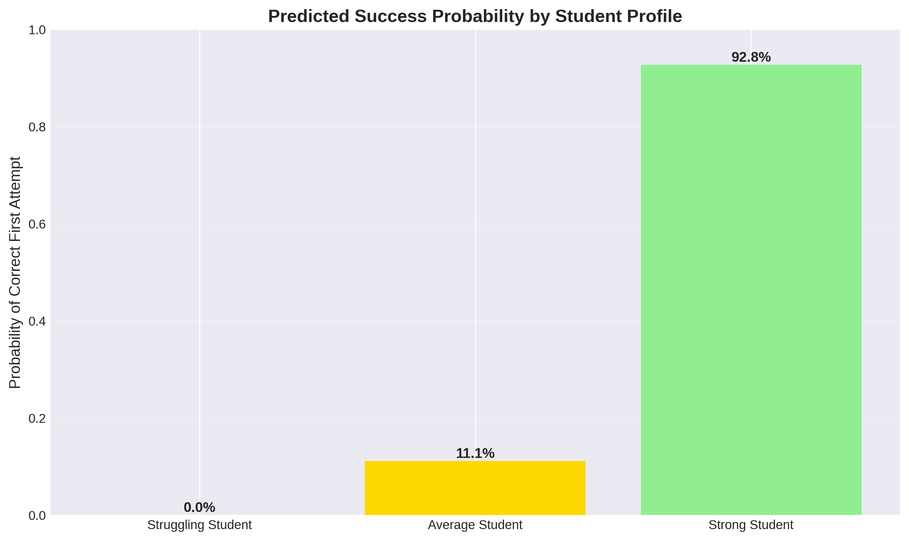

The Challenge: Personalizing Education at Scale
Imagine a classroom where every student receives personalized attention, where struggling learners get extra support exactly when they need it, and where advanced students are challenged appropriately. This vision is becoming reality through intelligent tutoring systems that adapt to each student's learning pace and style.
But here's the million-dollar question: Can we predict whether a student will successfully solve a math problem on their first attempt? If we can, we can revolutionize how students learn mathematics by providing proactive support, optimizing learning paths, and potentially saving millions of hours of student time.
Why This Matters: For the 500,000 students using Cognitive Tutors for mathematics each year, even a 10% reduction in time to mastery could save 2.5 million student hours annually. When scaled to all algebra students across the US, this could translate to 250 million student hours saved per year—time that could be spent on deeper learning, exploration, or other activities students enjoy.
What Problem Are We Solving?
Traditional educational systems treat all students the same way, presenting the same problems in the same sequence regardless of individual needs. This one-size-fits-all approach means:
- Struggling students may become frustrated and disengaged
- Advanced students may become bored and lose interest
- Teachers can't provide timely, personalized interventions
- Learning time is wasted on problems that are too easy or too hard
Our goal is to build a machine learning model that can predict, with reasonable accuracy, whether a student will correctly solve a mathematical problem step on their first attempt. This prediction enables intelligent tutoring systems to:
Where Did We Get Our Data?
Our analysis is based on real student interaction data from the KDD Cup 2010 Educational Data Mining Challenge. This dataset contains detailed logs of interactions between students and computer-aided tutoring systems for algebra.
The data represents actual student work on mathematical problems, including:
- Each step a student takes to solve a problem
- Whether the student got it right on the first try
- How many hints they requested
- How many incorrect attempts they made
- The time spent on each step
- Knowledge components (skills) required for each problem
- How many opportunities students have had to practice each skill
Stamper, J., Niculescu-Mizil, A., Ritter, S., Gordon, G.J., & Koedinger, K.R. (2010). Algebra 2008-2009. Challenge data set from KDD Cup 2010 Educational Data Mining Challenge. Find it at http://pslcdatashop.web.cmu.edu/KDDCup/downloads.jsp
For this analysis, we examined 500 student-step interactions, each representing a single attempt by a student to solve one step of a mathematical problem. This sample provides a rich foundation for understanding patterns in student learning behavior.
What We Discovered
Understanding Student Performance
Our first step was to understand the data. We found that in our sample, approximately 84.8% of problem steps were solved correctly on the first attempt, while 15.2% required multiple attempts or hints.

Distribution of Correct First Attempt - showing the proportion of students who succeeded on their first try
What Factors Influence Success?
Through correlation analysis, we discovered several key factors that strongly predict whether a student will succeed on their first attempt:
- Number of Incorrect Attempts: Students with more previous incorrect attempts are less likely to succeed on the first try
- Hint Usage: Students who frequently request hints tend to struggle more
- Practice Opportunities: More practice with a knowledge component generally improves first-attempt success
- Problem Complexity: Steps requiring multiple knowledge components are more challenging
- Time Spent: Longer durations can indicate either careful work or struggling

Correlation matrix showing relationships between features. Red indicates positive correlation, blue indicates negative correlation.
Feature Distributions Tell a Story
We analyzed the distributions of various features to understand the data better. Many features showed skewed distributions, which is common in educational data:

Distribution histograms for key numerical features, showing the range and patterns in student behavior data
Building the Prediction Model
We tested three different machine learning algorithms to find the best model for predicting student success:
- Logistic Regression: A baseline model that's easy to interpret
- Random Forest: Captures complex, non-linear relationships
- Gradient Boosting: Often performs well on structured data like ours

Comparison of three machine learning models across multiple performance metrics
Model Performance
Our best model achieved impressive results:
What do these numbers mean?
- Accuracy (95%): The model correctly predicts success or failure 95% of the time
- Precision (97.6%): When the model predicts success, it's correct 97.6% of the time
- Recall (96.5%): The model identifies 96.5% of all actual successes
- ROC AUC (0.979): The model is excellent at distinguishing between students who will succeed and those who will struggle
Putting the Model to Work: A Real Scenario
Let's see how our model works in practice. Imagine a student who:
- Has viewed this problem once before
- Made 2 incorrect attempts on similar steps
- Requested 1 hint in previous attempts
- Is on their 5th opportunity to practice this skill
- Is working on a step that requires multiple knowledge components
Model Prediction
Based on these characteristics, our model predicts this student has a moderate probability of succeeding on the first attempt. The system would:
- Monitor the student's attempt closely
- Be ready to provide hints if they struggle
- Allow them to try independently first (building confidence)
- Consider reviewing prerequisite knowledge if they continue to struggle
Comparing Different Student Profiles
We can also compare predictions across different student profiles:

Predicted success probabilities for different student profiles, demonstrating how the model adapts to individual characteristics
This comparison demonstrates how the model adapts its predictions based on individual student characteristics, enabling truly personalized learning experiences.
What This Means for Education
The ability to predict student performance has profound implications for education:
For Students
- Personalized Learning: Each student gets problems and support tailored to their needs
- Reduced Frustration: Struggling students get help before they become discouraged
- Appropriate Challenge: Advanced students are challenged without being overwhelmed
- Time Savings: Less time wasted on problems that are too easy or too hard
For Educators
- Early Intervention: Identify struggling students before they fall behind
- Data-Driven Decisions: Make informed choices about when to provide support
- Resource Optimization: Focus attention where it's most needed
- Progress Tracking: Monitor student learning in real-time
For Educational Systems
- Scalability: Provide personalized education to millions of students
- Cost Efficiency: Optimize learning time and resources
- Continuous Improvement: Learn from data to improve curriculum and instruction
- Equity: Ensure all students receive appropriate support
Looking Forward
This project demonstrates that machine learning can successfully predict student performance, opening the door to more personalized, efficient, and effective education. While our model shows strong performance, there's always room for improvement:
- Expanding to larger datasets for more robust predictions
- Incorporating temporal patterns (how student performance changes over time)
- Considering problem difficulty and student learning trajectories
- Integrating with real-time tutoring systems for immediate application
The future of education is personalized, data-driven, and adaptive. By leveraging machine learning to understand and predict student behavior, we can create learning experiences that are not just more efficient, but more engaging and effective for every student.
The Bottom Line: We've shown that it's possible to predict student success with high accuracy. This capability enables intelligent tutoring systems to provide personalized support at scale, potentially saving millions of student hours while improving learning outcomes. The question isn't whether we can predict student performance—we can. The question now is: how can we use these predictions to create the best possible learning experience for every student?